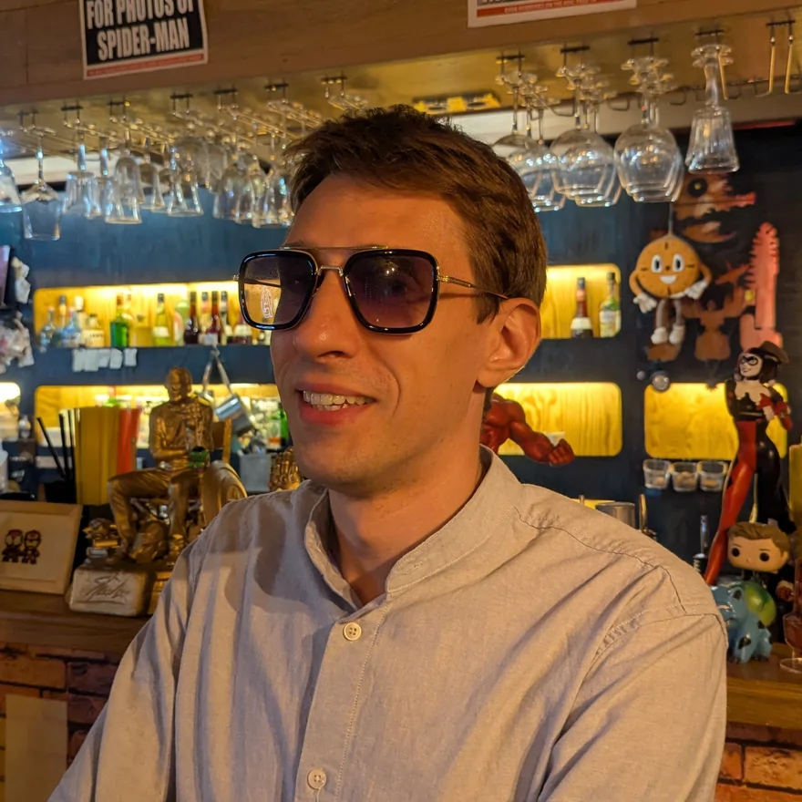

Я — человек на стыке технического и творческого. Во мне довольно хорошо уживаются инженер, 3D-моделлер, преподаватель, художник, электронщик и начинающий актёр. А в последние годы к этому добавился большой интерес к психологии и отношениям. ❤️
Привет,
я Антон
ИЗ Г. АСТРАХАНЬ
Я люблю создавать вещи, идеи и моменты, которые потом хочется вспоминать. Люблю спорт и велосипедные прогулки, изучаю психологию и прокачиваю свой эмоциональный интеллект.
Ищу девушку для построения долгосрочных отношений.
✨инженер & преподаватель
3Dдизайн & печать
🚴велосипед & ЗОЖ
📈инвестиции

ПРИЯТНО
ПОЗНАКОМИТЬСЯ ✦
ПОЗНАКОМИТЬСЯ ✦
01 / ОБО МНЕ
ТЕХНИКА × ТВОРЧЕСТВО × ЛЮДИ
Собираю жизнь
из идей, чувств
и импровизации
Мне нравится придумывать и создавать то, чего ещё не существует: иногда это полезная вещь, иногда сложный технический проект. Но удовольствие мне приносят и совсем простые бытовые творческие процессы — например, приготовление еды. 🍳
Самое большое удовольствие для меня — возможность разделять творческий процесс с близкими людьми. Создавать что-то вместе, неважно, сложное или простое: нарисовать, напечатать в 3D, собрать, приготовить или исследовать новое. Для меня творчество — это продолжение души. А иногда — её глубинная потребность. 🫂
Я достаточно рационально отношусь к работе и деньгам и уже создал для себя устойчивую материальную основу. У меня есть своя квартира, своё дело и доход от инвестиций. Но для меня гораздо важнее люди, близость, впечатления, развитие и то, что мы можем пережить и создать вместе. 🏠
Я ценю искренность, взаимность, эмпатию и возможность оставаться собой рядом с другим человеком. Мне интересны отношения, в которых два самостоятельных человека делают жизнь друг друга теплее, интереснее и насыщеннее. 👩❤️👨
Наверное, поэтому мне неинтересно создавать вокруг себя образ загадочного и недоступного мужчины, чтобы казаться привлекательнее. Мне гораздо интереснее быть живым человеком: иногда серьёзным, иногда грустным, иногда смешным; способным увлечься новой идеей, полюбить и сказать об этом не вовремя, признать свою неправоту, чему-то научиться — и снова придумать какую-нибудь штуку, которую совершенно необязательно было придумывать. 🌱
02 / КАДРЫ ЖИЗНИ
Листай вправо →




МОЯ ДЕЯТЕЛЬНОСТЬ
Создаю вещи
Вдохновляюсь
людьми
По образованию я инженер-строитель, а сейчас работаю на пересечении 3D-моделирования, образования и предпринимательства. Мне нравится превращать идеи в осязаемые вещи — я занимаюсь 3D-печатью.
Постоянно учусь, пробую новое и с удовольствием делюсь тем, что умею.
«Вижу ценность не в цене, а во внутреннем мире»
ВО МНЕ УЖИВАЮТСЯ
Противоположности,
которым хорошо вместе
Не выбираю между разумом и чувствами — мне интересно соединять всё воедино.
Инженер+Творческий человек
Рациональный+Романтик
Любитель DIY+Любитель психологии
Изобретатель+Актёр
Регулярные инвестиции+Спонтанные траты на идеи
Молчать в компании+Проболтать вдвоём до утра
СО МНОЙ МОЖНО…
Делить не только время,
но и впечатления
например:
- 01В тёплое время года уехать на велосипеде кататься по городу.
- 02Придумать какую-нибудь вещь — и через несколько часов держать её в руках.
- 03Вместе готовить ужин и обсуждать психологию.
- 04Поехать в незнакомый город и весь день исследовать его пешком.
- 05Сделать что-нибудь творческое вместе: рисовать, красить, паять или печатать на 3D-принтере.
- 06Рассматривать архитектуру, фотографировать красивые места и исследовать всё необычное.
- 07Разговаривать на глубокие и сложные темы без споров, с принятием точек зрения друг друга.
- 08Вместе осваивать новое хобби, в котором оба сначала ничего не умеем.
- 09Учить друг друга тому, что каждый умеет лучше.
- 10Смотреть фильм или читать книгу, а потом вместе обсуждать персонажей и сюжет.
- 11Пойти на актёрский, художественный или другой необычный мастер-класс просто ради нового опыта.
- 12Планировать и воплощать что-то долгосрочное, где нужно последовательно идти к цели и быть устойчивым на длинной дистанции.
Значение имени

Имя с историей
Меня назвали в честь французского писателя Антуана де Сент-Экзюпери. Какие-то черты знаменитого тёзки присущи и мне:
Инженерный ум и романтизм
Инженер с душой романтика. Обретаю творческую энергию во взаимных отношениях. Мечтаю проектировать, программировать и создавать материальные вещи вместе с любимым человеком.
Гуманизм
В материальном мире больше ценю не вещи, а сближение человеческих душ.
Развитая эмпатия
Стараюсь чувствовать то, что чувствуют другие, и смотреть на мир чужими глазами. Иногда мне нужно на это немного времени.
ЗАБАВНЫЕ ФАКТЫ ОБО МНЕ
Десять историй,
которые не поместились
в обычную анкету
10
ФАКТОВ
ФАКТОВ
- 01
В 8 лет нашёл дедушкину книгу по автоматике, раздобыл лампочки и провода — собрал свой первый фонарик.
- 02
Первый 3D-принтер появился, когда мы с другом решили делать сувенирные снежные шары. В 2013 году я стал одним из первых владельцев 3D-принтера в городе — а со временем 3D-технологии стали моей профессией.
- 03
Однажды мы с друзьями спасли котёнка из колодца, выложили видео на YouTube и нашли ему хозяев. Посмотреть видео ↗
- 04
Был за Полярным кругом и гладил оленей.
- 05
Делал собственный умный дом задолго до того, как это стало мейнстримом. Посмотреть видео ↗
- 06
Начал ходить на курсы актёрского мастерства и побывал актёром в настоящем театральном представлении.
- 07
Пишу книгу о психологии отношений — постоянно дополняю её, чтобы не совершать прежних ошибок.
- 08
Научился плавать только в 30 лет.
- 09
В студенческие годы с компанией друзей снимал юмористические видео и занимался импровизацией.
- 10
Делал свой стартап, получал инвестиции от ФСИ Посмотреть видео ↗
МОЯ АНКЕТА
Немного фактов,
которые многое говорят
🍰 Возраст 37 лет
Но здоровье лучше, чем в 27. Спасибо ЗОЖ.
🔝 Рост 185 см
Вес обычно 70–75 кг.
👶 Детей нет
был женат, сейчас в разводе
Не чайлдфри. Вижу высшую ценность в создании долгосрочных и здоровых отношений. При этом считаю, что женщина вправе сама выбирать отношение к рождению детей.
♓ Знак зодиака - Рыбы
Асцендент в Рыбах, Луна в Козероге.
⚡ Телосложение стройное
В планах еще подкачаться и набрать мышечной массы.
🖤 Вредные привычки - периодическая меланхолия
Иногда бываю чуть депрессивным, но искренне стремлюсь стать более позитивным.
🍷 Нет алкогольных, никотиновых, игровых зависимостей
Алкоголь — редко и очень умеренно; не курю. Компьютерными играми не увлекаюсь. Я не радикальный противник "вредностей", просто меня это не привлекает.
💻 Деятельность и интересы
Работаю в 3D-дизайне и образовании, развиваю бизнес по 3D-моделированию и печати. Люблю технологии, искусство, DIY, творчество, глубокие разговоры, психологию, долгие прогулки и уютные места.
🏠 Есть своё жильё
Двухкомнатная квартира в Астрахани, район ТЦ «Три кота».
✅ Нет долгов, кредитов, алиментов
Ипотека была единственным кредитом — уже давно закрыта.
📈 Доход 163 тыс. ₽
Среднемесячный доход за два года по данным выписки ФНС: зарплата + предпринимательство + инвестиции.
🚴 Стиль жизни
Осознанное потребление и инвестиции - вместо трат на понты. Хочу, чтобы меня ценили не за обложку, а за внутренний мир.
🚩 Потенциальные ред-флаги
Не автомобилист (хотя права есть, раньше водил), часто езжу на велосипеде и не всегда слежу за стилем, есть бывшие девушки в соцсетях.
💚 Потенциальные грин-флаги
Признаю важность психологии и развиваю эмоциональный интеллект. Умею чинить вещи и готовить, люблю готовить вместе, мою посуду, поддерживаю чистоту. Искренний, тактильный, самодостаточный и умею помогать в быту.
🎯 План на 5 лет
Приобрести своё жильё в более благополучном городе, чем Астрахань. Рассматриваю Москву, Питер, Краснодар
ГДЕ Я БЫВАЛ
Города, дороги
и новые впечатления
19 точек на моей личной карте — и это только начало.
Санкт-ПетербургМоскваСочиНадымЯкутияНовосибирскМурманскНикельМончегорскКраснодарГеленджикКисловодскКазаньВолгоградНижний НовгородПензаРостовСтамбулКемер😆Камызяк
ТЕПЛО
·
ИСКРЕННОСТЬ
·
ОБЩИЙ ВЗГЛЯД
КОГО Я ИЩУ
Ищу стройную девушку от 25 до 37 лет, которая ценит здоровый образ жизни. Свободную (без маленьких детей), открытую к общению и серьезным отношениям.
Идеальная точка соприкосновения: наличие творческих хобби или профессии: дизайн, архитектура, искусство, интерес к созданию чего-либо своими руками. 3D-моделирование или творческие темы станут отличным началом разговора.
Если откликается —
напиши мне
Если стесняешься, то хотя бы намекни мне лайками на фото. А лучше — напиши: простое «привет» уже хороший старт.
ПОДСКАЗКА ДЛЯ НАЧАЛА ДИАЛОГА
Не знаешь,
о чём спросить?
Выбери интересную тему — рандомайзер предложит вопрос, который можно отправить мне прямо сейчас.
Выбери категорию
Нажми на любую цветную кнопку — и здесь появится вопрос.
Не подошёл вопрос? Нажми на ту же категорию ещё раз.
… ещё немного интересного
Вопросы
и ответы
То, о чём часто хочется спросить до первой встречи.
Ты действительно ищешь серьёзные отношения или просто знакомишься?
Сначала — знакомство. Я не считаю, что серьёзные отношения можно назначить заранее с человеком, которого ещё не знаешь. Для меня всё решает взаимность: если мы оба проявляем интерес, хотим сближаться и узнавать друг друга, я вполне настроен строить серьёзные отношения. Чем сильнее взаимность с обеих сторон, тем серьёзнее и мои намерения.
Почему закончился твой брак?
В какой-то момент мы просто стали очень разными людьми. Изначально у нас был общий быт, взаимная помощь и довольно партнёрская модель. Позже представления бывшей жены о необходимом уровне жизни сильно изменились, и от меня стали ожидать значительно большего материального обеспечения. Я не хотел отношений, в которых ценность одного партнёра определяется тем, какой уровень комфорта он обеспечивает другому. На этом наши пути и разошлись.
Почему у тебя до сих пор нет детей? Хочешь ли ты их вообще?
Я не против детей, но рождение ребёнка никогда не было для меня самостоятельной жизненной целью. Для меня важнее сначала найти человека, с которым получится построить действительно крепкий союз. Если гипотетически выбирать между любовью и взаимопониманием на всю жизнь без детей и рождением детей в отношениях, которые потом распадутся, я без сомнений выберу первое. Ребёнок для меня — продолжение крепких отношений, а не их замена.
Почему ты сейчас без отношений и как давно они у тебя были?
Последние отношения закончились в 2024 году. Мы разошлись спокойно: поняли, что наши привычки и представления о комфортной совместной жизни заметно различаются. Никакой войны после расставания не было, мы сохранили нормальное человеческое общение. После этого были знакомства и попытки сблизиться, но взаимного выбора не произошло. Если совсем просто: некоторые девушки нравились мне, но меня в качестве партнёра не выбирали.
Какие отношения ты считаешь здоровыми?
Для меня это союз двух взрослых самостоятельных людей. Каждый способен жить, работать, решать бытовые вопросы и не ищет партнёра как спасателя от собственной жизни. При этом вместе им теплее, интереснее и счастливее, чем по отдельности. Слабости и трудности, конечно, есть у всех. Но я не хочу отношений, где один человек постоянно должен истощать свои эмоциональные, физические или финансовые ресурсы, чтобы компенсировать неспособность другого справляться со своей жизнью.
Что для тебя значит «создавать что-то вместе»? Девушка обязательно должна разделять твои увлечения?
Совместное творчество для меня — одна из форм счастья. Мне очень нравится вместе что-то придумывать, готовить, рисовать, мастерить, паять или превращать идею в настоящую вещь. Особенно если рядом любимый человек — такая деятельность буквально заряжает меня энергией. Конечно, девушке совершенно не обязательно любить всё то же, что и мне. Но несколько общих увлечений и искреннее желание иногда что-то делать вместе для меня очень важны.
Что тебя сильнее всего привлекает в женщине помимо внешности?
Меня очень привлекает увлечённость. Особенно когда девушка умеет что-то создавать своими руками или серьёзно развивается в каком-нибудь творческом направлении. Мне нравится видеть человека, у которого загораются глаза от собственного дела. А если девушка ещё интересуется дизайном, 3D-графикой, Blender или чем-то близким к моему миру — для меня это огромный плюс. Такая общность интересов способна очень сильно усилить первоначальную симпатию.
Как ты ведёшь себя во время конфликтов?
Обычно довольно спокойно и сдержанно. Мне сложно кричать на человека даже при сильных эмоциях: внутри есть чёткий стоп перед поведением, за которое потом будет стыдно. Конечно, я не робот — могу разозлиться, повысить голос, в крайнем случае хлопнуть дверью или ударить кулаком по столу. Но унижения, угрозы и физическое насилие для меня находятся за границей допустимого. Конфликт должен закончиться разговором и решением, а не соревнованием в том, кто больнее ударит другого.
Ты пишешь про эмпатию и эмоциональный интеллект. А что это означает на практике?
Для меня эмпатия — попытка действительно представить, что сейчас чувствует другой человек, а не автоматически оценивать ситуацию только со своей позиции. Не всегда мне удаётся сделать это прямо в моменте, поэтому иногда понимание приходит позже, после размышлений. Эмоциональный интеллект для меня связан ещё и с саморегуляцией: заметить собственную эмоцию, понять её причину и не позволить первой импульсивной реакции испортить отношения. Я этому учусь и точно не считаю себя человеком, который уже всё освоил.
Почему ты не рассматриваешь отношения с женщиной с маленьким ребёнком?
Это мой достаточно жёсткий личный выбор: я не хочу становиться отцом чужому маленькому ребёнку. Если когда-нибудь стану отцом, то всегда представлял рядом собственного ребёнка, появившегося в наших отношениях. Кроме того, маленькому ребёнку объективно требуется огромное количество времени и внимания матери, и я не хочу конкурировать с ним за это внимание или ожидать, что женщина будет выбирать между отношениями и материнством. Поэтому считаю честнее сразу признать такую несовместимость, чем начинать отношения и надеяться, что потом как-нибудь привыкну.
Какие качества в девушке заставят тебя быстро потерять интерес?
Сильно отталкивает нечистоплотность — и бытовая, и в отношении собственного тела. Но ещё быстрее я теряю интерес, когда вижу полное отсутствие любознательности и желания развиваться. Мне трудно сближаться с человеком, которому не хочется ни о чём задумываться, ничего нового узнавать и который строит жизнь почти исключительно вокруг быстрых развлечений и удовольствий. Мне нужен рядом человек с собственным внутренним миром, интересами и работающей любознательностью.
Что для тебя неприемлемо в отношениях?
Намеренный холод, игнор как наказание, манипуляции обидой и попытки заставить партнёра угадывать, что произошло, вместо нормального разговора. Я плохо отношусь ко лжи, особенно когда никакой реальной необходимости лгать вообще не было. И, конечно, для меня неприемлема измена. Если между нами возникла серьёзная проблема, я предпочту услышать неприятную правду и разбираться с ней, чем участвовать в отношениях, где внешнее спокойствие поддерживается обманом.
Почему ты в 37 лет не обзавёлся своим автомобилем?
Потому что долгое время он мне банально не был нужен. Я много хожу пешком, люблю велосипед, работа находилась недалеко, а для редких поездок хватало такси. Межгород за рулём мне тоже не понравился: многочасовая дорога скорее утомляет, чем приносит удовольствие. Был и не самый удачный опыт с автомобилями, требовавшими постоянного ремонта. А когда выплачивал ипотеку, сознательно предпочитал отправлять деньги на её досрочное погашение. Поэтому автомобиль проиграл другим приоритетам — не по статусу, а по полезности.
Как ты представляешь распределение денег в паре?
Я бы делил не столько деньги, сколько общую нагрузку. У одного человека может лучше получаться зарабатывать, у другого — заниматься частью бытовых вопросов, и механическое «всё строго 50/50» не всегда справедливо. Если оба работают примерно одинаково, но я зарабатываю заметно больше, мне кажется нормальным взять на себя большую долю общих расходов. При этом мне важно, чтобы у каждого оставались собственные деньги и свобода распоряжаться ими. Главное для меня — не математическое равенство, а ощущение справедливости с обеих сторон.
Ты ждёшь от девушки финансовой самостоятельности?
Да, в разумной степени. Мне хотелось бы видеть рядом женщину, которая способна обеспечивать свою базовую жизнь или хотя бы последовательно к этому стремится. Я не ищу отношения, основной функцией которых станет закрытие чьего-то финансового дефицита. При этом разница в доходах меня совершенно не пугает: если я зарабатываю больше, естественно, могу больше вкладывать в общую жизнь. Для меня принципиальна не одинаковая сумма на счетах, а самостоятельность и отсутствие потребительского отношения к партнёру.
Насколько для тебя важны личное пространство и отдельные интересы друг друга?
Мне нравится делиться своим пространством, но именно добровольно. Даже в близких отношениях у человека должно оставаться право на свои вещи, рабочее место, время и возможность иногда побыть одному. А вот в интересах я, наоборот, люблю пересечения: чем их больше, тем интереснее вместе. Причём мне необязательно заранее разделять увлечения девушки — я вполне могу попробовать её музыку, литературу, танцы или какое-то совершенно незнакомое мне занятие. Мне нравится, когда отношения расширяют мир обоих, а не сужают его.
Зачем ты написал книгу об отношениях, если сам пока не нашёл отношения, которые хочешь построить?
Именно поэтому во многом и написал. У меня есть опыт отношений и собственных ошибок, и мне захотелось понять психологические механизмы глубже: коммуникацию, конфликты, границы, взаимность, эмоциональную регуляцию. Книга не сделала меня человеком, который теперь «знает секрет любви». Более того, одна из последних важных мыслей, которые я в неё добавил, родилась из собственной ошибки: нельзя бесконечно добиваться человека, который тебя не выбирает. Знания помогают строить отношения, но не могут создать взаимность там, где её нет.
Ты действительно настолько серьёзно увлечён психологией? Не будешь ли ты постоянно меня анализировать?
Надеюсь, что уже научился этого не делать. У меня был опыт, когда я пытался слишком много анализировать отношения прямо в процессе их развития — контролировать динамику, разбирать реакции, искать объяснения. Хорошо это не закончилось. Поэтому сейчас мне гораздо ближе принцип: анализировать прежде всего себя — свои чувства, реакции и поступки. А отношения разбирать вместе только тогда, когда обоим это действительно нужно. Иногда отношениям полезнее просто жить, чем постоянно класть их на лабораторный стол.
Ревнивый ли ты?
Скорее нет. У меня нет привычки искать подвох, проверять человека или автоматически подозревать измену. Но я считаю важной ясность в начале серьёзных отношений. У взрослых людей иногда остаются незакрытые связи: бывшие партнёры, секс без обязательств, отношения в непонятном статусе. Если мы выбираем друг друга и становимся парой, мне важно честно проговорить такие вещи и закрыть романтические и сексуальные двери в прошлое. Доверие для меня — это не слепота, а отсутствие необходимости что-то скрывать друг от друга.
Что для тебя значит быть верным?
Когда я действительно выбираю женщину, верность не ощущается для меня каким-то подвигом или ограничением. У меня просто пропадает потребность искать романтическое или сексуальное сближение на стороне. Но для меня верность — это не только отсутствие секса с другими. Она тесно связана с честностью: тайный флирт, скрытые встречи и двойная жизнь всё равно требуют обмана. А необходимость систематически врать человеку, которого я люблю, разрушала бы прежде всего моё собственное самоуважение.
Как выглядит твой обычный выходной?
Очень по-разному. Могу спокойно провести его дома: заниматься 3D-графикой, изучать новые технологии и нейросети или делать собственный проект. А если после сидячей работы хочется движения — могу несколько часов гулять или уехать кататься на велосипеде. Ещё лучше — путешествие, встреча с друзьями или какое-нибудь новое место. Мне одинаково может понравиться насыщенный активный день и домашний день за интересным делом. Главное, чтобы в нём было что-то, что действительно меня увлекает.
Обязательно ли твоей будущей девушке кататься с тобой на велосипеде?
Нет. Конечно, мне было бы приятно иногда кататься вместе — особенно в хорошую погоду, без гонок и спортивных нормативов. Но совершенно необязательно превращаться ради меня в заядлую велосипедистку. Даже одной-двух совместных поездок в месяц мне вполне хватило бы, если ей самой это нравится. Свои длинные велосипедные маршруты я прекрасно могу проезжать один. Общие увлечения для меня важны, но я точно не хочу выдавать любимому человеку список обязательных дисциплин.
Ты пишешь, что отношения дают тебе творческую энергию. Не означает ли это, что твоё эмоциональное состояние зависит от партнёрши?
В некоторой степени — да, и я не хочу делать вид, будто близкие люди никак на меня не влияют. Когда чувствую любовь, взаимность и эмоциональное единение, у меня действительно становится больше жизненной и творческой энергии. Я стараюсь направлять её в работу, развитие и созидание. При этом партнёрша не должна становиться ответственной за моё настроение или постоянно меня «заряжать». Но полностью автономным от близости человеком я себя не считаю. Отношения мне нужны именно потому, что эмоциональная связь для меня имеет большую ценность.
Ты скорее домашний человек или любишь постоянно куда-то выбираться?
Я сезонный человек. Зимой в Астрахани чаще предпочитаю оставаться дома: холодное время года здесь не особенно располагает к долгим прогулкам. Зато весной, летом и осенью меня заметно сложнее удержать на месте. Люблю велосипед, пешие прогулки, новые маршруты и возможность куда-нибудь выбраться без слишком сложного плана. Поэтому мне комфортны оба режима: провести день дома за интересным занятием или с утра уйти гулять и вернуться только вечером.
Ты умеешь просто отдыхать и ничего не делать?
Плохо. 😄 Мне гораздо проще переключиться с одного интересного занятия на другое, чем действительно ничего не делать. Даже отдых часто превращается у меня в прогулку, велосипед, новый проект или изучение чего-нибудь любопытного. Фильм в одиночестве я обычно включаю уже тогда, когда совсем устал и энергии почти ни на что не осталось. Возможно, это мой недостаток, а возможно — просто высокий жизненный тонус. Во всяком случае, лежать целый выходной и смотреть в потолок — точно не мой природный талант.
Почему ты так подробно рассказываешь на сайте о квартире, доходах и инвестициях?
Потому что не люблю оценивать благополучие по внешней атрибутике. Дорогой автомобиль или одежда могут быть куплены в кредит, а человек без демонстративного потребления может иметь квартиру, накопления и ноль долгов. Меня самого не раз оценивали именно по внешним признакам и ошибались. Поэтому здесь я предпочитаю скучную прямоту красивой иллюзии: вот мои реальные обстоятельства, без арендованного спорткара для фотографии. Но я точно не хочу, чтобы квартира или деньги становились главной причиной интереса ко мне.
Почему ты всё ещё живёшь в Астрахани, если рассматриваешь переезд?
Потому что здесь не только город — здесь моя семья, друзья, недвижимость и сложившийся круг общения. Переехать одному в Москву или Петербург исключительно ради работы и оказаться там в социальной изоляции мне не кажется улучшением жизни. При этом к Астрахани я намертво не привязан и переезд вполне рассматриваю — в том числе ради отношений. Просто мне хотелось бы переезжать к чему-то: к любимому человеку, интересной совместной жизни или действительно более комфортной среде, а не просто менять один адрес на другой.
Насколько для тебя важно, чтобы девушка была спортивной?
Довольно важно, хотя профессионального спорта я совершенно не жду. Мне нравится активная жизнь: много ходить, путешествовать, кататься на велосипеде, исследовать город пешком. Поэтому хотелось бы, чтобы девушка физически чувствовала себя комфортно в таком ритме и сама любила движение. Это может быть зал, танцы, велосипед, прогулки или обычная домашняя физкультура — не принципиально. Мне важнее привычка заботиться о теле и двигаться, чем спортивные достижения и фотографии с медалями.
Почему для тебя важно, чтобы девушка была стройной?
Потому что это часть моего физического влечения. Мне визуально нравятся девушки примерно моей комплекции, и выраженный лишний вес снижает моё сексуальное притяжение. Можно придумать для этого более красивое объяснение, но оно будет менее честным. При этом стройность сама по себе ничего не говорит ни об уме, ни о характере, ни о ценности человека. Это просто мой личный физический типаж. Я считаю честнее признать наличие предпочтений, чем начинать отношения с человеком и потом пытаться переделать его внешность под себя.
Насколько для тебя вообще важна внешность?
Важна, но не настолько, чтобы заменить всё остальное. Для начала романтического сближения мне нужно хотя бы базовое физическое притяжение — без него отношения могут так и остаться дружескими. При этом мой интерес способен очень сильно вырасти после общения: интеллект, характер, творчество, юмор и эмоциональная близость заметно меняют восприятие внешности. Поэтому у меня нет каталога идеальных черт лица. Но делать вид, что внешность в романтических отношениях вообще ничего для меня не значит, я тоже не буду.
Что ты сам можешь дать отношениям?
Во-первых, себя — со временем, вниманием, заботой, идеями и желанием действительно строить совместную жизнь. У меня есть собственное жильё и достаточно устойчивая материальная база, поэтому я могу предложить не только романтику, но и реальную перспективу совместного быта и будущего. При этом я не считаю себя уже достигшим какой-то окончательной психологической зрелости. Я продолжаю учиться понимать себя, регулировать эмоции, признавать ошибки и разговаривать. Могу обещать не идеального партнёра, а человека, который относится к развитию всерьёз.
Насколько легко ты признаёшь, что был неправ?
Достаточно легко, если понимаю, в чём именно ошибся. Мне неинтересно любой ценой выигрывать спор и сохранять за собой священное право быть правым. Но и автоматически брать на себя вину только ради прекращения конфликта я не буду. Мне важно разобраться, что произошло, какие были последствия и где действительно моя ответственность. Если новые факты показывают, что моя позиция была ошибочной, я вполне способен её пересмотреть. Для меня изменить мнение после получения новой информации — не слабость, а нормальная работа мышления.
Какое первое свидание тебе самому хотелось бы?
В тёплое время года — встретиться где-нибудь в красивом месте и пойти гулять без жёсткого маршрута. По дороге можно найти кафе, взять что-нибудь выпить или поесть и спокойно поговорить. Зимой я скорее выбрал бы уютное место, где не нужно перекрикивать музыку. А ещё мне нравятся настольные игры на воображение и импровизацию: они довольно быстро показывают живого человека за стандартными вопросами первого свидания. В общем, меньше собеседования — больше совместного маленького приключения.
А чего ты ждёшь от девушки?
Открытости, интереса и встречного движения. Мне хочется не вытягивать общение из человека клещами, а видеть, что девушка сама хочет рассказывать о себе, задавать вопросы, делиться чувствами и иногда проявлять инициативу. Мне приятны и маленькие знаки внимания со стороны женщины: угостить приготовленным кексом, сделать что-нибудь своими руками, придумать маленький сюрприз. Мне не нужна игра в односторонние ухаживания. Если мы нравимся друг другу, я хочу, чтобы это было заметно с обеих сторон.
Почему для тебя так важна взаимность? Что ты под ней понимаешь?
Потому что раньше я мог слишком долго добиваться понравившуюся девушку, даже когда встречного движения почти не было. В итоге тратил много сил на отношения, существовавшие главным образом в моих надеждах. Сейчас для меня взаимность — это когда оба проявляют инициативу, интересуются друг другом, хотят встречаться и постепенно вкладываются в сближение. Она не обязана быть идеально симметричной каждый день. Но если интереса нет, мне нужна честность. «Ты мне не подходишь» для меня намного бережнее, чем холод, исчезновения и месяцы неопределённости.
Готов ли я менять привычный образ жизни ради отношений?
Смотря о каких изменениях идёт речь. Если они логичны, делают нашу совместную жизнь лучше и я понимаю, ради чего это нужно, — да, вполне. Отношения в любом случае требуют некоторой взаимной адаптации. Но для меня есть разница между разумным компромиссом и требованием изменить себя в угоду чужим капризам. Я готов учитывать близкого человека, пересматривать привычки и договариваться. Но не хочу жить по принципу «если любишь — значит, должен делать так, как я хочу».
Есть ли сейчас в моей жизни время для девушки?
Да. Более того, если появляются отношения, я готов освобождать для них время и при необходимости двигать рабочие планы. Для меня это естественно: близкий человек не должен постоянно получать остаток времени после работы и всех остальных дел. Конечно, у меня есть свои проекты, обязанности и периоды большой загрузки, но я не хочу строить жизнь, в которой работа настолько неприкосновенна, что для отношений постоянно приходится искать свободное окошко.
Готов ли я регулярно учитывать желания и планы другого человека?
Да, я отношусь к этому спокойно. Совместная жизнь без этого вообще представляется мне довольно странной. Главное, чтобы желания и планы можно было нормально проговаривать, а не ожидать, что другой человек сам обо всём догадается. Мне важно понимать, чего хочет близкий человек, почему это для него важно и где наши планы пересекаются. Я очень ценю ощущение прозрачности: когда можно прямо сказать о своих желаниях, обсудить их и найти решение, подходящее обоим.
Что ты ценишь в отношениях, а что не принимаешь?
Нравится: Эмоциональная вовлечённость, инициатива со стороны девушки, искренность и прямота, глубокое общение, совместная деятельность, тактильность и романтическая близость, эмпатия, способность договариваться, интеллектуальная и творческая живость, отношение к паре как к команде, принятие моих чувств, осознанность и зрелость, интеллектуальная и психологическая глубина.
Не нравится: Эмоциональный холод, игнор как способ наказания, , агрессия и грубость, необходимость угадывать, необъяснимые и резкие отказы, двойные сигналы, обесценивание твоей заботы, едоверие к моим намерениям, отсутствие встречного вклада, попытки переделать меня в одностороннем порядке, долженствования без взаимного вклада, манипуляция ревностью, жёсткие гендерные сценарии, потребительское отношение к ухаживаниям, отношения как борьба за власть, навешивание ярлыков без попытки разобраться.
Как я выгляжу со стороны для незнакомой девушки?
Наверное, как вполне обычный мужчина. Я не очень умею и не особенно хочу создавать вокруг себя образ «смотрите, какой я крутой». Мне вообще чужда идея специально демонстрировать статус, достижения или собирать эффектную витрину личности только ради того, чтобы кого-то очаровать. Я предпочитаю выглядеть и вести себя примерно так же, как в обычной жизни. Возможно, поэтому при первом знакомстве я не всегда оказываюсь в центре женского внимания. Зато мне нравится, когда интерес возникает не к образу, а ко мне настоящему.
Что общего у девушек, в которых я влюблялся?
Почти у всех были выраженные творческие интересы. Кто-то рисовал, кто-то занимался дизайном, 3D, или другим делом, связанным с созданием чего-то своего. Видимо, меня действительно сильно привлекают люди, у которых есть потребность не только потреблять окружающий мир, но и что-нибудь в него добавлять. Мне интересно наблюдать за чужим творческим процессом, обсуждать идеи и особенно что-то создавать вместе. Поэтому творчество для меня часто становится одним из первых катализаторов симпатии.
Не теряю ли я интерес, когда девушка начинает проявлять ко мне симпатию?
Нет, такого со мной пока не происходило. Скорее наоборот: встречная симпатия способна заметно усилить мой интерес. Правда, почти всегда девушки начинали проявляться уже после того, как первый шаг делал я: знакомился, уделял внимание, приглашал куда-то, ухаживал. Поэтому мне даже интересно однажды оказаться в ситуации, когда девушка сама достаточно ясно покажет: «Ты мне нравишься, я хочу узнать тебя ближе».
Какие качества девушки для меня действительно принципиальны?
На первом этапе для меня важны внешняя симпатия и наличие точек соприкосновения — особенно творческих. Отношения без первоначального притяжения мне трудно представить. Но для долгой дистанции внешности совершенно недостаточно. Там для меня становятся принципиальными эмоциональная открытость, эмпатия и бережность, способность разговаривать о сложном, живой интерес к жизни, самостоятельность, собственное дело или увлечение, желание что-то делать вместе. Также для меня важны здоровый образ жизни и отсутствие серьёзных вредных привычек.
Требую ли я от девушки того уровня, которому сам соответствую?
Я вообще стараюсь меньше мыслить отношениями как списком требований. Мне не нужен определённый доход, статус или набор достижений девушки — я способен обеспечивать себя сам. Но некоторые вещи я действительно ищу примерно на том уровне, которому соответствую сам. Например, слежу за своим весом и мне нравятся стройные девушки; у меня нет детей, и я предпочёл бы встретить женщину без детей. А главное требование у меня скорее не к «уровню», а к взаимности: если я вкладываюсь в отношения, мне важно чувствовать сопоставимое встречное движение.
Не изображаю ли я безразличие, когда на самом деле заинтересован?
Специально — нет. Я вообще не люблю игры в духе «стану холоднее, чтобы сильнее заинтересовать». Если я выгляжу отстранённым, скорее всего, в этот момент я действительно сильно занят работой, каким-то проектом или решением своих проблем. При этом я нормально отношусь к прямым вопросам. Если девушка спросит: «Ты вообще во мне заинтересован?» — я предпочту честно ответить, а не заставлять её разгадывать моё поведение. Мне кажется, намеренно изображать безразличие к человеку, который тебе нравится, — довольно странный способ строить близость.
Интересуюсь ли я жизнью партнёра, предпочтениями, мыслями и желаниями?
Да. Причём со временем я стал относиться к этому гораздо внимательнее. Раньше мне казалось, что достаточно просто хорошо относиться к человеку и проводить с ним время. Сейчас я понимаю, насколько важно действительно интересоваться партнером. Мне интересно узнавать внутренний мир близкого человека, а не только рассказывать о своём.
Умею ли я говорить о собственных чувствах?
Думаю, да, хотя здесь мне ещё есть чему учиться. Я знаком с техникой «я-сообщений» и стараюсь объяснять, что именно я чувствую, как воспринимаю ситуацию и чего мне хотелось бы. На практике это, конечно, не всегда получается идеально — особенно когда эмоции сильные. Но я точно не сторонник идеи, что мужчина должен молчать о переживаниях и изображать железобетонную конструкцию. Мне важнее научиться говорить о чувствах прямо, понятно и без нападения на другого человека.
Как я отношусь к домашним животным?
Спокойно, но с существенной оговоркой: мне важно, насколько животное воспитано и как организован быт вокруг него. Я плохо отношусь к постоянному шуму ночью и по утрам, грязи, шерсти повсюду и испорченным вещам. Особенно это важно потому, что дома у меня есть рабочая зона с техникой и оборудованием, куда шерсть и пыль попадать не должны. Поэтому я не из тех, кто автоматически растает при словах «давай заведём пять котиков». Но с воспитанным животным и разумно организованным пространством я вполне могу ужиться.
Какие мои качества могут заставить хорошую девушку отказаться от отношений со мной?
Наверное, моя прямота, интенсивность и довольно выраженное желание определённости. Если человек мне действительно нравится, я не очень умею месяцами изображать лёгкое безразличие и делать вид, что мне всё равно. Иногда я могу слишком быстро включаться в общение, много спрашивать и пытаться разобраться в происходящем. Для девушки, которой нужно очень медленное сближение и много дистанции, это может оказаться чрезмерным. Я это в себе вижу и учусь лучше чувствовать темп другого человека, но превращаться ради привлекательности в холодного и безразличного тоже не получается.
Отпустил ли я своих бывших девушек?
Да. С некоторыми из них мы до сих пор можем оставаться друзьями в соцсетях, но за этим не стоит скрытого ожидания, желания вернуть отношения или каких-то продолжающихся переживаний. У нас нет близкого общения, которое мешало бы новым отношениям. Я нормально отношусь к тому, что люди когда-то были важной частью моей жизни, а потом наши дороги разошлись. Для меня прошлые отношения — это скорее часть моей истории и опыта, чем незакрытые двери, в которые я продолжаю время от времени заглядывать.